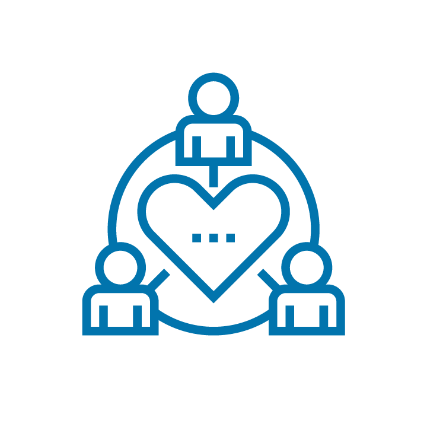
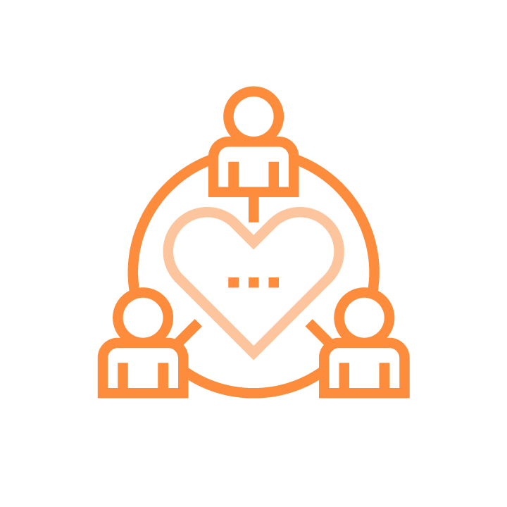
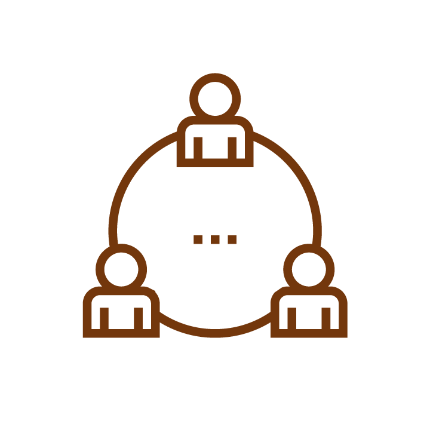
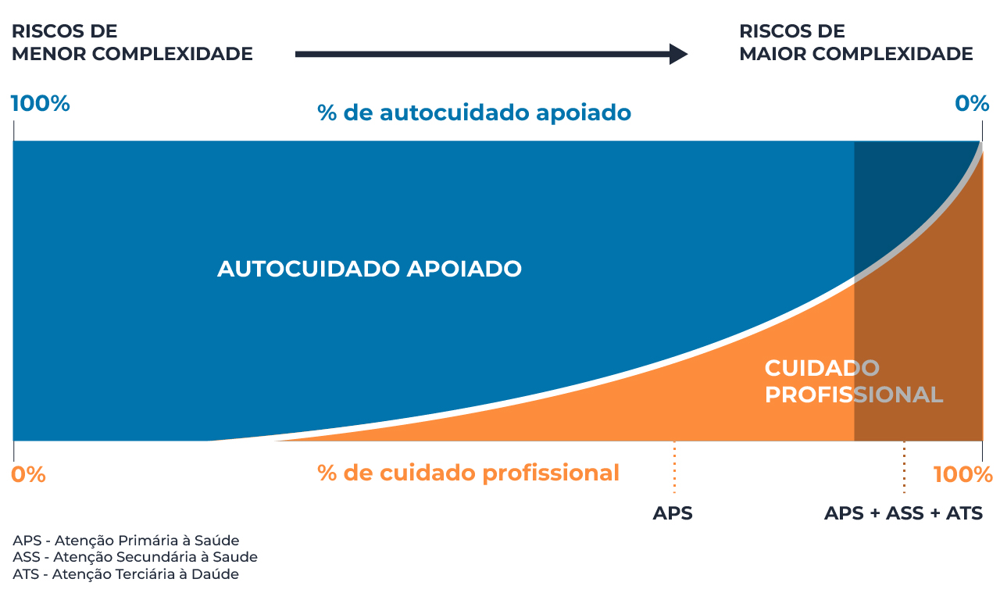

Módulo 2 | Aula 2 O cuidado e o autocuidado no contexto da promoção da saúde e prevenção de doenças
Cuidado, autocuidado e autocuidado apoiado como estratégias para prevenção de condições de saúde, doenças ou agravos
É histórica a abordagem dos problemas de saúde da comunidade mediante uma classificação que as divide em doenças transmissíveis e não transmissíveis. Essa classificação mostrou-se ineficaz para subsidiar a organização dos sistemas de atenção à saúde, pois muitas doenças transmissíveis que possuem longo período de curso, se aproximam mais da lógica de manejo das doenças crônicas do que aquelas de curso rápido, a exemplo, a Aids, doença transmissível pelo vírus HIV, que apresenta características de doença crônica.
A Organização Mundial da Saúde (2003) apresenta uma nova classificação que parte do conceito de condição de saúde, elaborada a partir do modo como os profissionais, comunidade e serviços de saúde se estruturam no processo de atenção à saúde, mediante respostas reativas e pontuais ou de caráter contínuo e proativo. Assim, delineia a atenção à saúde frente às condições agudas ou às condições crônicas.
As condições crônicas possuem início geralmente insidioso, evolução lenta e longa duração, com a possibilidade da ocorrência de agravos e complicações a depender do adequado controle e manejo dessas condições. Apresentam determinantes cuja intensidade varia ao longo do tempo, como a hereditariedade, hábitos de vida, condições de trabalho, entre outros. De forma contrária, nas condições agudas espera-se uma recuperação adequada e relativamente rápida, com respostas previsíveis a partir da terapêutica implementada.
No mundo, assim como também no Brasil, o processo de longevidade da população traz uma elevação das condições crônicas, pois elas afetam, em especial, as pessoas com idades mais avançadas. Segundo dados do CENSO 2010, existem 24.236 idosos com mais de 100 anos de idade vivendo no Brasil. A constatação decorrente desse panorama epidemiológico é a de que os serviços de saúde precisarão oferecer de forma constante mais ofertas de atenção à saúde para as pessoas com condições crônicas, que sejam resolutivas e favoreçam sua autonomia para o gerenciamento da própria saúde, ressaltando-se ainda mais a importância da LS na promoção do autocuidado, visto que essa população é mais vulnerável a baixos níveis de LS.
Você encontrará um link com um artigo sobre longevidade e como os próprios longevos a percebem nos materiais complementares deste curso.
Cuidado, autocuidado e autocuidado apoiado na atuação dos profissionais da ESF
Considerando a lógica das RAS, na qual a APS é o eixo gerenciador, ordenador e o centro de comunicação integrador dessas Redes, a atuação dos profissionais que compõem as equipes de saúde demanda modelos de atenção que sejam efetivos, delineados de modo específico para as condições agudas e crônicas.
Esta forma de atuação da equipe de saúde deve envolver cada profissional de modo específico, porém, interdependente, considerando seus saberes formativos individuais, mas também o potencial de alcance que suas ações conjuntas poderão suscitar. Nesse aspecto, enfermeiros, agentes comunitários de saúde, médicos, odontólogos, assistentes sociais, psicólogos e demais profissionais que constroem e organizam o cotidiano de atividades das unidades de saúde da APS, necessitam mobilizar seus conhecimentos e habilidades, com vistas a planejarem a tomada de atitudes proativas direcionadas à promoção da saúde junto aos indivíduos e comunidades, estimulando a autonomia e a LS nesses sujeitos.
Reforça-se que a promoção da saúde deve ser considerada uma ação estratégica no processo de trabalho das equipes da APS e na realização do autocuidado apoiado. Nesse sentido, articulações e pactuações de natureza intersetorial, envolvendo as lideranças comunitárias do território, são essenciais para a realização de ações participativas que impactem positivamente sobre os determinantes de saúde da população (BRASIL, 2013).
Frente a uma condição crônica, é possível compreender a atuação das equipes de saúde na realização do autocuidado apoiado a partir das características do sujeito e sua relação com esta condição crônica, que envolve a duração dessa condição, a urgência da intervenção, o tipo de serviço necessário e a capacidade para o autocuidado do próprio sujeito.
Assim, podem ser caracterizados três grupos (MENDES, 2012), veja a seguir.

O grupo 1 situa as pessoas com condição leve, mas com elevada capacidade de autocuidado e/ou com sólida rede social de apoio.
O grupo 2 inclui pessoas com condição moderada.


O grupo 3 agrupa aqueles com condições severas, instáveis e com baixa capacidade para o autocuidado.
Essa classificação considera, portanto, a variação da capacidade para o autocuidado de cada indivíduo, com foco em sua relação de parceria com a equipe de saúde, que vai do autocuidado apoiado ao cuidado profissional. Essa variação é sustentada pela teoria do espectro da atenção à saúde, uma referência adotada pelo National Health System (NHS), o Serviço Nacional de Saúde do Reino Unido (BROCK, 2005). O espectro da atenção à saúde na relação desses grupos com o autocuidado apoiado está representado na figura a seguir.

Conforme o espectro da atenção à saúde, o cuidado das condições crônicas ocorre em uma variação de 100% de autocuidado apoiado (por exemplo, consumo de alimentos saudáveis) até 100% de cuidado profissional (por exemplo, realização de procedimento de revascularização com implante de stent).
Esta flutuação variará em função da complexidade dos riscos, pois supostamente pessoas com condições crônicas leves terão maior percentual de autocuidado apoiado do que as pessoas com condições crônicas moderadas ou graves.
Por outro lado, é preciso considerar que, na prática, a complexidade do risco deve estar relacionada com a capacidade de autocuidado das pessoas, pois, mesmo que uma pessoa esteja com uma condição crônica leve, se tiver baixa capacidade para o autocuidado, ela poderá necessitar de cuidados profissionais em proporção maior do que o esperado para esse grupo.
Confira um texto sobre a teoria do espectro da atenção à saúde para o autocuidado.
As intervenções de autocuidado apoiado, portanto, independentemente de estarem direcionadas às ações de promoção da saúde ou de prevenção de doenças, tem como foco principal o apoio às pessoas, para que estas se tornem empoderadas e protagonistas sociais da própria saúde, em um processo contínuo e inter-relacional com os profissionais de saúde da APS e com a rede familiar e social (MENDES, 2012).
Tais intervenções, de caráter educacional ou assistencial, quer sejam realizadas no espaço da unidade de saúde, no território por ocasião de uma visita domiciliar ou durante a participação em reuniões da comunidade adscrita, constituem estratégias a serem utilizadas pelos profissionais de saúde para acessar as pessoas, criar vínculo e estimular as conexões familiares e dos grupos sociais (amigos, vizinhos), visando contribuir conjuntamente para o empoderamento dos indivíduos, auxiliando-os assim a se tornarem proativos no gerenciamento da própria saúde.
Com isso, as estratégias de cuidado, autocuidado e autocuidado apoiado revertem-se e consolidam-se como intervenções centrais em saúde coletiva para a promoção da saúde e prevenção de doenças e outras condições de saúde no contexto da APS.